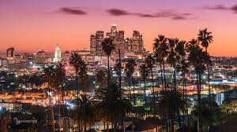
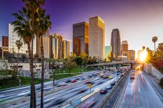
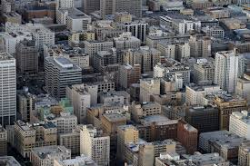
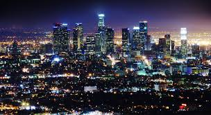
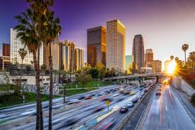
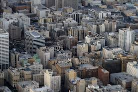
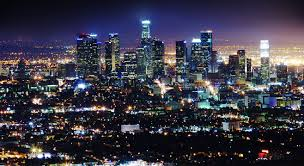

Los Angeles and often known by its initials L.A., is the cultural, financial, and commercial center of Southern California. With a U.S. Census-estimated 2016 population of 3,976,322, it is the second most populous city in the United States and the most populous city in the state of California. Located in a large coastal basin surrounded on three sides by mountains reaching up to and over 10,000 feet, Los Angeles covers an area of about 469 square miles. The city is also the seat of Los Angeles County, the most populated county in the country. Los Angeles is the center of the Los Angeles metropolitan area, with 13,131,431 residents.
 




